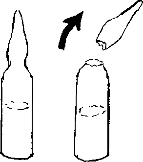

{% set pagetitle = "How to inject medicines
into muscle
If the medicine comes in an ampule" %}
{% set seq_length = 7 %}
{% set seq_position = 1 %}
{% set seq_llink = "javascript:;" %} ## set rlink equal to next page href
{% set seq_rlink = "How_to_injection_from_ampule2.html" %} ## set llink equal to previous page href
{% extends "templates.jinja/base.page-with-sequence.html" %}
{% block title %} Hesperian - Pregnancy & Birth{% endblock %}
{% block id %}Injection_from_ampule1{% endblock %}
{% block content %}
- Wipe the ampule clean with a cloth or some alcohol.
- Then wrap a clean cloth around the top and break it off.
{% endblock %}
{% block footer %}
{% endblock %}